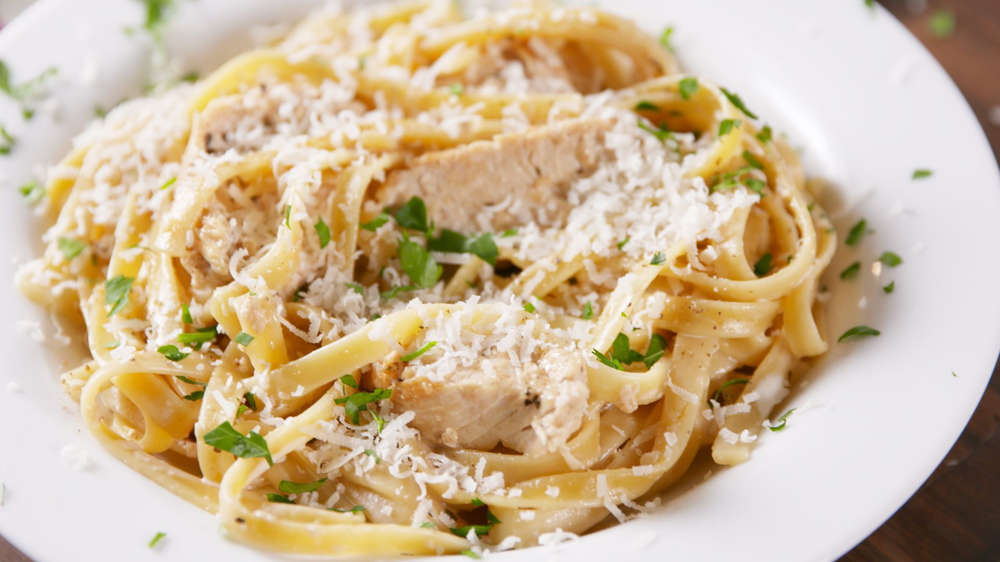

Quick and Easy Alfredo Sauce

Description:
Alfredo sauce is a creamy pasta sauce that's frequently paired with fettuccine.
The iconic dish, fettuccine Alfredo, is an Italian menu staple.
According to legend, the dish was invented by a Roman chef named Alfredo di Lelio in the early 1900s.
Di Lelio's pregnant wife was struggling to keep any food down, so he tossed pasta in the simple buttery sauce of his own creation.
He added fettuccine Alfredo to his restaurant's menu soon after.
Traditional Alfredo sauce consists of butter, heavy cream, Parmesan cheese, and basic seasonings such as salt and pepper.
This simple recipe, though, has a secret ingredient that speeds up the cooking process and makes it extra indulgent: cream cheese.
Ingredients
- Butter
- Cream Cheese
- Garlic Powder
- Milk
- Parmesan Cheese
- Pepper
Steps:
- Before you start making the sauce, go ahead and prep any other ingredients you'll be using in your dish (like pasta and chicken).
Your sauce will be ready to toss and serve as soon as it's done cooking.
- Melt butter in a saucepan over medium-high heat, then whisk in the cream cheese and garlic powder.
When the first three ingredients form a smooth sauce, start gradually whisking the milk into the mixture.
It's important to add the milk a little at a time to prevent lumps and to ensure a thick texture.
- Add the cheese and pepper last. Stir the sauce until it's smooth and glossy.
- Toss the sauce with pasta, chicken, and/or other ingredients that are necessary for your dish. Serve immediately.